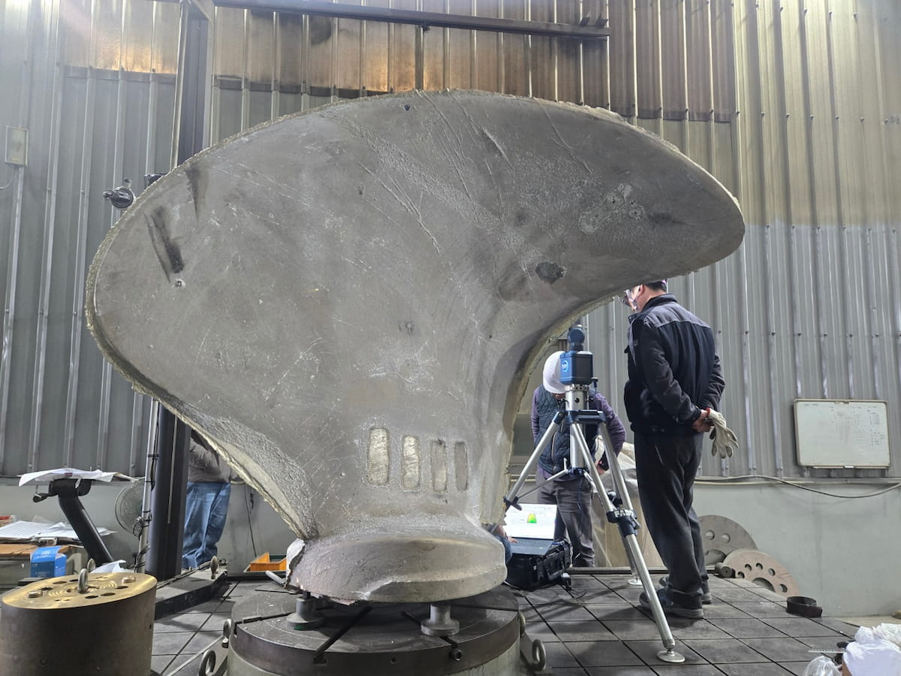
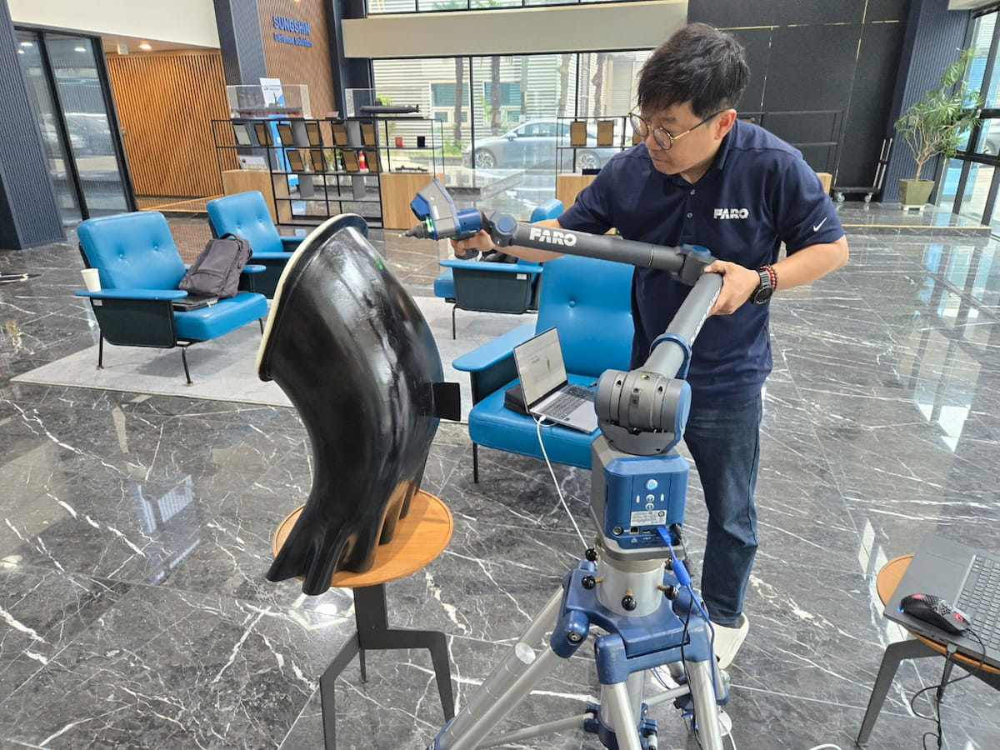
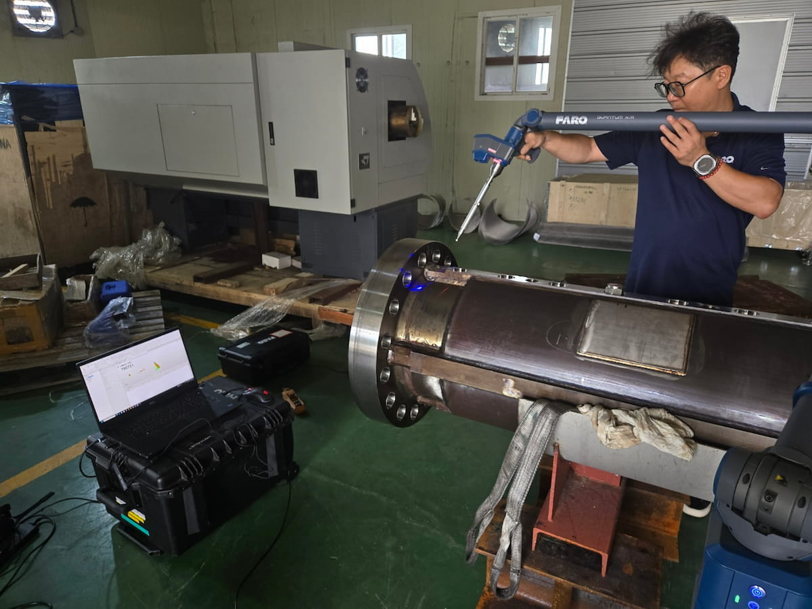
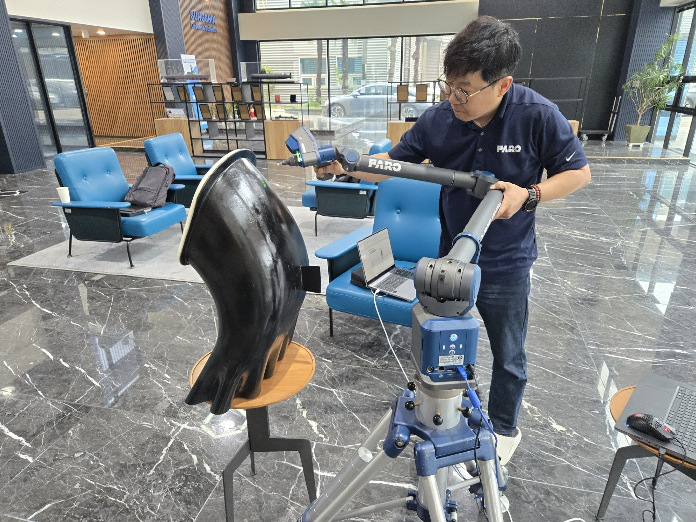

중공업 · 대형 부품
대형 산업용 부품 형상 측정
대형 곡면 부품의 주요 형상과 위치를 현장에서 측정하여 치수 검토와 3D 데이터 구축을 지원합니다.
정밀 측정 장비와 소프트웨어를 활용하여 제조 현장의 품질 검사와 공정 안정화를 지원합니다.
제조 현장에서는 부품의 치수 정확도, 조립 품질, 설비 정렬 상태를 빠르게 확인하고 품질 데이터를 체계적으로 관리하는 것이 중요합니다.
KTM Partners는 휴대형 3차원 측정 장비와 계측 소프트웨어를 통해 품질 검사, CAD 비교 분석, 공정 검증 및 보고서 작성을 지원합니다.
FIELD APPLICATIONS
생산 현장에서 수행한 대형 부품, 자유곡면 및 원통형 부품의 3차원 측정 사례를 소개합니다.

중공업 · 대형 부품
대형 곡면 부품의 주요 형상과 위치를 현장에서 측정하여 치수 검토와 3D 데이터 구축을 지원합니다.

제조 · 자유곡면
비접촉 레이저 스캐닝으로 복잡한 곡면의 표면 데이터를 취득하여 형상 검토와 설계 비교에 활용합니다.

제조 · 정밀 측정
FARO Quantum X.M을 이용하여 대형 원통형 부품의 형상과 주요 측정 위치를 생산 현장에서 검사합니다.

휴대형 3차원 측정 장비로 제조 현장의 정밀 측정과 품질 검사를 지원합니다.
Quantum X 휴대용 3차원 측정기 보기 →